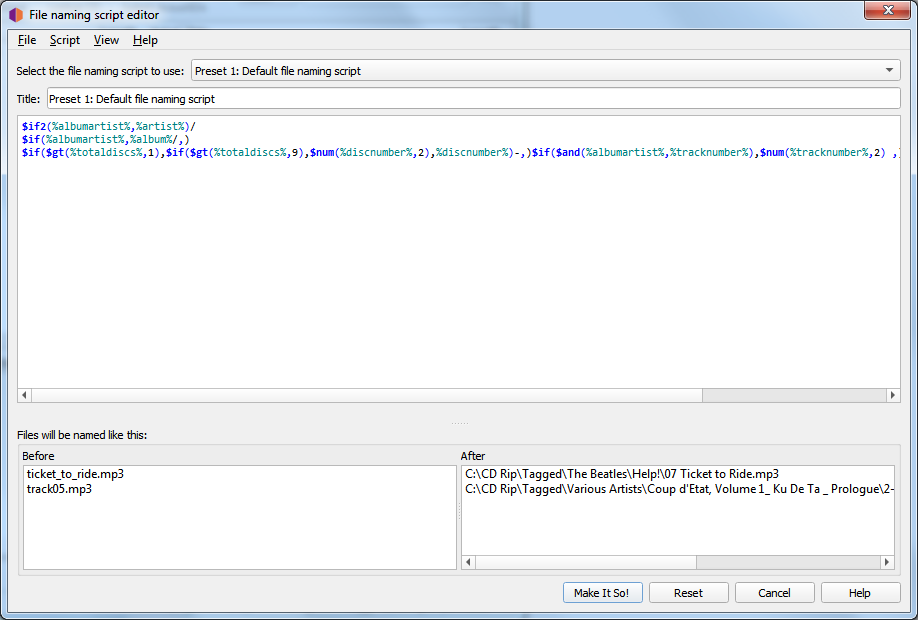
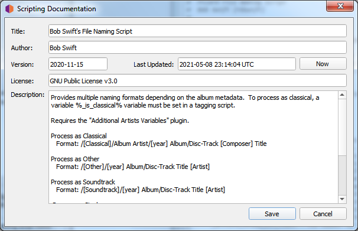

Nom de fichier Editeur de script
L’éditeur de script de nom de fichier est utilisé pour gérer les scripts de nom de fichier disponibles pour Picard. Chaque script a un titre qui apparaétra dans la boéte de sélection des scripts. Il y a deux types de scripts disponibles:
Scripts prédéfinis - Ce sont les scripts de base par défaut fournis par Picard.
Scripts définis par l’utilisateur - Il s’agit de scripts qui ont été définis ou personnalisés par l’utilisateur.
Les scripts prédéfinis ne peuvent pas être modifiés, mais vous pouvez faire une copie du script et la copie peut être éditée.
{kind=link}
L’écran de l’éditeur comporte les sections suivantes:
Sélectionnez le script de dénomination des fichiers à utiliser
Cette option permet à l’utilisateur de sélectionner le script de dénomination de fichier à utiliser dans la liste des scripts disponibles. Le script sélectionné apparaîtra dans la section d’édition, où il pourra être modifié s’il s’agit d’un script défini par l’utilisateur.
Titre
Le titre attribué au script actuellement sélectionné. Il peut être modifié si le script est un script défini par l’utilisateur.
Scénario
Sous le titre se trouve une section de boîte d’édition contenant la chaîne de formatage du script sélectionné. Ceci indique à Picard quel doit être le nouveau nom du fichier et des répertoires qu’il contient en fonction de diverses valeurs de métadonnées. La chaîne de formatage est généralement appelée « script de nom de fichier », et se trouve dans Le langage de script de Picard.
L’éditeur de script met automatiquement en surbrillance les éléments du script, notamment noms des fonctions et noms des balises et des variables. En passant le pointeur de votre souris sur l’une des entrées en surbrillance, vous afficherez des informations d’aide sur cette entrée, si elles sont disponibles.
Les caractères unicode peuvent être saisis dans le script en utilisant le format
\uXXXXoù « XXXX » est la valeur hexadécimale du caractère unicode. Il n’est pas recommandé d’inclure des caractères unicode dans le répertoire ou le nom du fichier.L’utilisation d’un “/” dans la chaîne de formatage permet de séparer le répertoire de sortie du nom du fichier. La chaîne de formatage peut contenir un nombre quelconque de caractères “/”. Tout ce qui précède le dernier “/” est l’emplacement du répertoire, et tout ce qui suit le dernier “/” devient le nom du fichier.
Chaque script de dénomination de fichier peut varier d’un simple script d’une ligne tel que
%album%/%title%à un script très complexe utilisant différents formats de dénomination de fichier basés sur différents critères. Dans tous les cas, les fichiers seront enregistrés en utilisant le texte produit par le script.Les scripts sont souvent discutés dans le Forum communautaire de MetaBrainz, et il existe un fil de discussion spécifique au nommage des fichiers et aux extraits de script. Il y a aussi un tutoriel sur Ecriture d’un script de nommage de fichier disponible.
Note
Les nouvelles balises définies ou les balises modifiées par le script de dénomination des fichiers ne seront pas écrites dans les métadonnées des fichiers de sortie.
Les fichiers seront nommés comme ceci
Sous le script de dénomination des fichiers se trouve une section montrant des exemples de sortie du script en deux colonnes : Avant et Après. Si vous sélectionnez des fichiers dans le volet Cluster ou Album avant d’ouvrir l’écran Options, jusqu’à 10 fichiers seront choisis au hasard parmi votre sélection comme exemples de noms de fichiers. Si vous n’avez sélectionné aucun fichier, des exemples par défaut seront fournis.
Barre de menu
En haut de l’écran se trouve une barre de menu qui fournit des fonctions de gestion de script ainsi que des options de paramètres d’affichage. Les paramètres d’affichage comprennent:
Word wrap script - Ceci permet d’activer et de désactiver le word wrap dans la boîte d’édition du script.
Afficher les infobulles d’aide - Ceci déterminera si les informations sont affichées ou non lors du survol d’un élément en surbrillance.
Afficher la documentation - Cette option permet d’afficher la documentation des scripts dans une barre latérale à l’écran.
Il existe également une option permettant de mettre à jour les fichiers d’exemple choisis au hasard dans votre liste de fichiers sélectionnés.
La fonctionnalité de gestion des scripts comprend:
Importez un nouveau script à partir d’un fichier, qu’il s’agisse d’un script en texte brut ou d’un paquet de scripts de dénomination Picard.
Exporte le script actuel vers un fichier, soit sous forme de script en texte brut, soit sous forme de paquet de scripts de dénomination Picard.
Ajouter un nouveau script (par défaut).
Copie le script actuel comme un nouveau script.
Supprime le script actuel.
Réinitialise tous les scripts, également disponible via le bouton Reset.
Enregistrer toutes les modifications, également disponible via le bouton Faites-le donc!.
Quitter sans enregistrer les modifications, également disponible via le bouton Annuler.
Il existe également une option pour afficher/modifier les détails des métadonnées du script actuel. Ces détails comprennent des éléments tels que le titre, l’auteur, la version, la licence, la description, ainsi que la date et l’heure de la dernière mise à jour. Il est recommandé d’inclure dans la description des éléments tels que les plugins, les paramètres ou les scripts de marquage requis. Cette opération peut également être déclenchée en double-cliquant sur la zone de texte du titre du script.
Ces informations sont enregistrées dans le fichier Picard Naming Script Package, et sont incluses lorsqu’un fichier script package est importé.
{kind=link}